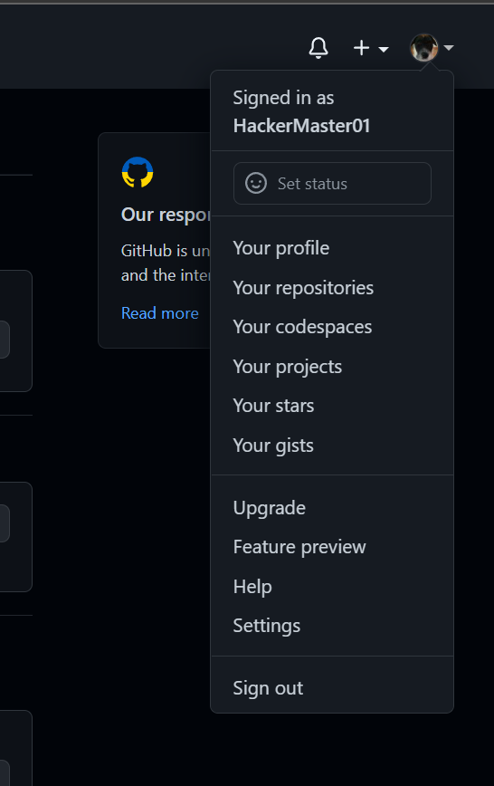
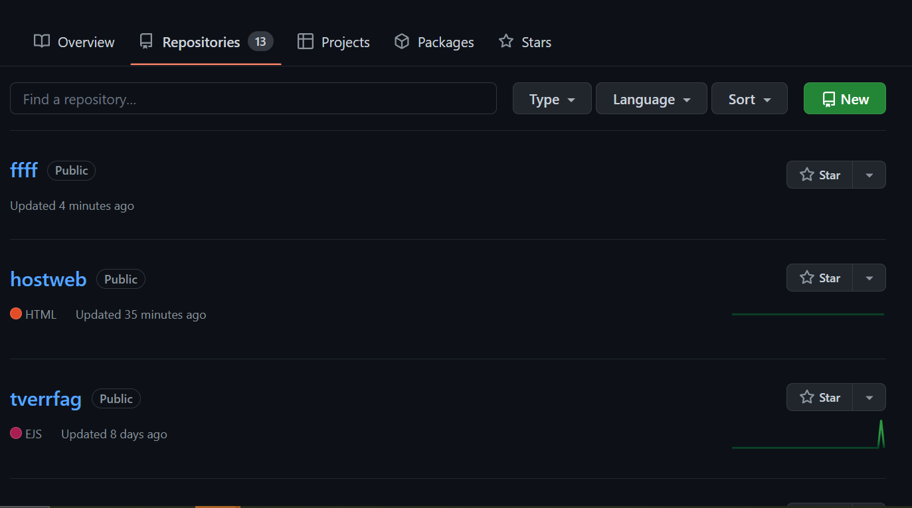
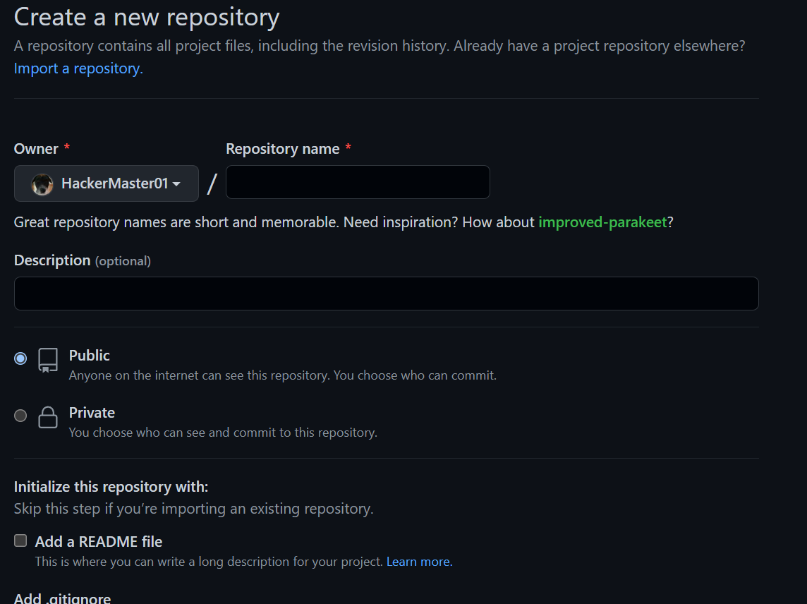
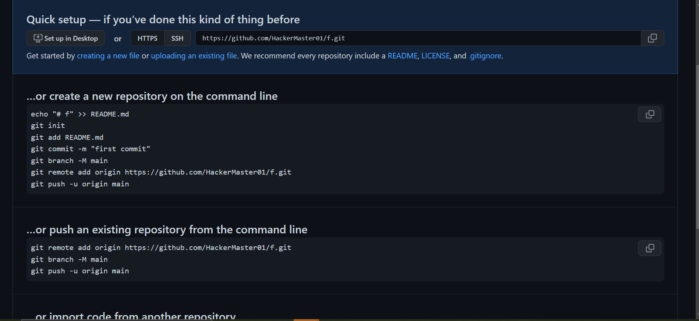
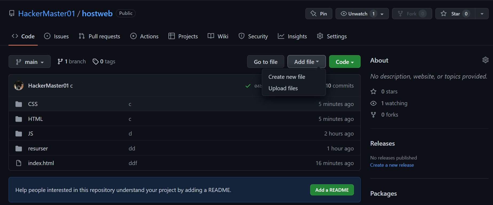

Step 1
Gå til github og login/sign in

Gå til github og login/sign in
Lage en repository ved å gå in på your repository og velg new
 Skriv inn repository name, discription og alt annet og klikk "create repository"
Så klikker på "create new file" og lag en ny html file som hetter index.html med eventuelt code
Så kan du legge til eller lage en js og css file ved å klikke add file endten "create new file" eller "uploade"
Gå inn på settings og in på pages. Inne på source så leger du til din branch og trykker save. Den linken som dukker opp er din public webside